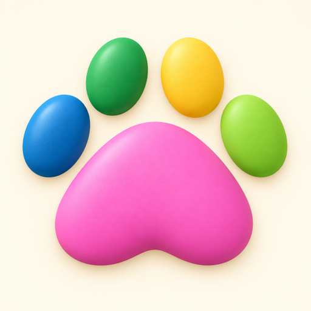

<!doctype html>
<html lang="zh">
<meta charset="utf-8">
<meta name="viewport" content="width=device-width,initial-scale=1">
<meta name="robots" content="noindex,nofollow">
<title>MeowPuzzle 测试版</title>
<style>
  body { margin: 0; background: #FFF9F3; color: #49353F; font: 17px/1.5 ui-rounded, "PingFang SC", system-ui, sans-serif; }
  main { max-width: 420px; margin: 0 auto; padding: 48px 24px; text-align: center; }
  img { width: 96px; height: 96px; border-radius: 22px; }
  h1 { font-size: 26px; margin: 16px 0 4px; }
  p { color: #806C75; margin: 8px 0; }
  a.install { display: block; margin: 28px 0 20px; padding: 16px; border-radius: 16px; background: #1A6E4A; color: #fff; font-weight: 700; text-decoration: none; }
  ol { text-align: left; color: #806C75; font-size: 15px; padding-left: 22px; }
  li { margin: 6px 0; }
</style>
<main>
  
  <h1>MeowPuzzle 测试版</h1>
  <p>版本 1.3.0 (18)</p>
  <a class="install" href="itms-services://?action=download-manifest&amp;url=https://dourgulf.github.io/meowpuzzle/beta/dfb5b729d5f6de7e/manifest.plist">安装 / Install</a>
  <ol>
    <li>请用 iPhone 或 iPad 的 Safari 打开本页（微信里请点右上角，选“在 Safari 中打开”）。</li>
    <li>点“安装”，在弹出的提示里再点“安装”，然后回到主屏幕等待下载完成。</li>
    <li>只有已登记的测试设备才能装上；装不上请联系开发者。</li>
  </ol>
</main>
</html>
